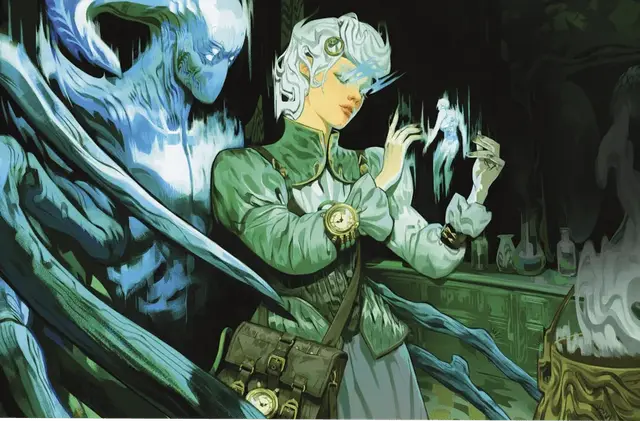

Калаштар
Kalashtar

Тип существа Аберрация
Размер Средний (рост около 6–7 футов)
Скорость 30 футов
Калаштары происходят от союза человечества и мятежных духов с плана снов, называемых куори. Калаштары выглядят как люди, но их духовная связь различными способами влияет на них. У них симметричные, слегка угловатые черты лица, а их глаза часто светятся, когда они концентрируются или выражают сильные эмоции.
Калаштары не могут напрямую общаться со своими духами-куори, но когда калаштар спит, он может бессознательно черпать из воспоминаний духов, затем ощущая их как источник инстинктов и вдохновения. Эта связь дает калаштарам небольшие псионические способности, а также защиту от псионических атак.
Особенности
Вы обладаете следующими особенностями вида:
Двойственность разума. Вы совершаете с Преимуществом спасброски Мудрости и Харизмы.
Ментальная дисциплина. Вы обладаете Сопротивлением Психическому урону.
Связь разумов. Вы обладаете телепатией дальностью, равной вашему уровню, умноженному на 10 футов. Когда вы используете эту особенность, чтобы телепатически общаться с существом, вы можете действием Магия дать этому существу телепатически общаться с вами в течение 1 часа или пока вы ещё одним действием Магия не окончите этот эффект.
Отделённый от снов. Заклинание Грёзы не может быть нацелено на вас. Кроме того, когда вы завершаете Долгий отдых, вы получаете владение одним навыком на ваш выбор. Это владение длится до тех пор, пока вы не завершите следующий Долгий отдых.